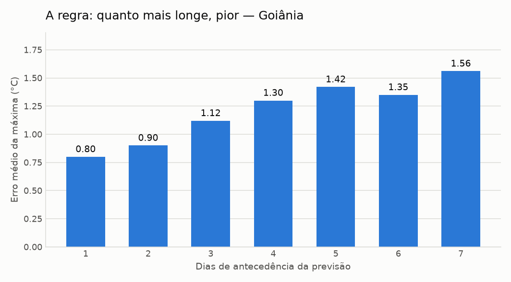
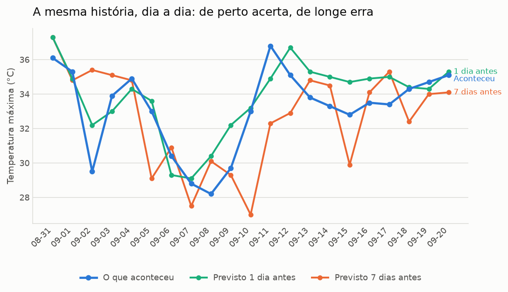

Boletim semanal de acerto da previsão — Goiânia
Análise
Na semana de 2026-09-14 a 2026-09-20, o erro médio da temperatura máxima foi de 1.22 °C em 49 previsões conferidas — pior que o acumulado, que está em 1.21 °C.
O viés de +0.82 °C indica que a previsão tende a ficar acima do que se observa. O acerto entre "vai chover" e "não vai" foi de 87.8%. O maior desacerto do histórico foi em 2026-09-10: previa 27.0 °C e foram 33.0 °C.
Na prática: com 1 dia de antecedência, conte com cerca de 0.8 °C de margem; com 7 dias, a margem sobe para perto de 1.56 °C. Para decisões que não podem errar, prefira confirmar na véspera.
texto automático (sem GEMINI_API_KEY). Os números são calculados em Python; a IA só redige, e o texto passa por uma auditoria que recusa qualquer número que não saia do cálculo.
Quanto a previsão erra, por antecedência
Sobre todo o histórico. É a regra central do boletim: a previsão de véspera é boa, a de uma semana é um palpite informado.
| Antecedência | Previsões | Erro médio máx. | Erro médio mín. | Viés máx. |
|---|---|---|---|---|
| 1 dia | 60 | 0.8 °C | 0.6 °C | +0.61 °C |
| 2 dias | 60 | 0.9 °C | 0.82 °C | +0.78 °C |
| 3 dias | 60 | 1.12 °C | 0.97 °C | +0.93 °C |
| 4 dias | 60 | 1.3 °C | 1.18 °C | +0.92 °C |
| 5 dias | 60 | 1.42 °C | 1.4 °C | +1.06 °C |
| 6 dias | 60 | 1.35 °C | 2.53 °C | +0.83 °C |
| 7 dias | 60 | 1.56 °C | 2.49 °C | +0.49 °C |

E a mesma regra vista dia a dia: a previsão feita 1 dia antes acompanha o que aconteceu; a de 7 dias se descola.

Chuva: acertou o sim ou não?
Na semana. Considera-se que choveu a partir de 1.0 mm no dia.
| Situação | Dias |
|---|---|
| Previu chuva e choveu | 0 |
| Previu chuva e não choveu | 6 |
| Não previu e choveu | 0 |
| Previu seco e ficou seco | 43 |
Maior desacerto do histórico
Em 2026-09-10, com 7 dias de antecedência: previsto 27.0 °C, observado 33.0 °C (-6.0 °C).